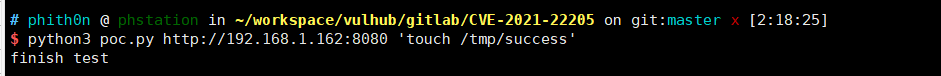
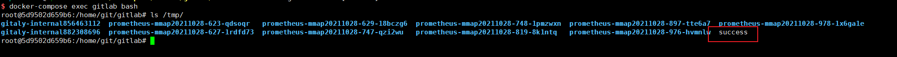

GitLab 远程命令执行漏洞（CVE-2021-22205）¶
GitLab是一款Ruby开发的Git项目管理平台。在11.9以后的GitLab中，因为使用了图片处理工具ExifTool而受到漏洞CVE-2021-22204的影响，攻击者可以通过一个未授权的接口上传一张恶意构造的图片，进而在GitLab服务器上执行任意命令。
参考链接：
- https://hackerone.com/reports/1154542
- https://devcraft.io/2021/05/04/exiftool-arbitrary-code-execution-cve-2021-22204.html
- https://security.humanativaspa.it/gitlab-ce-cve-2021-22205-in-the-wild/
- https://github.com/projectdiscovery/nuclei-templates/blob/master/cves/2021/CVE-2021-22205.yaml
漏洞环境¶
执行如下命令启动一个GitLab 13.10.1版本服务器：
docker compose up -d
环境启动后，访问http://your-ip:8080即可查看到GitLab的登录页面。
漏洞复现¶
GitLab的/uploads/user接口可以上传图片且无需认证，利用poc.py脚本来测试这个漏洞：
python poc.py http://your-ip:8080 "touch /tmp/success"

进入容器内，可见touch /tmp/success已成功执行：
